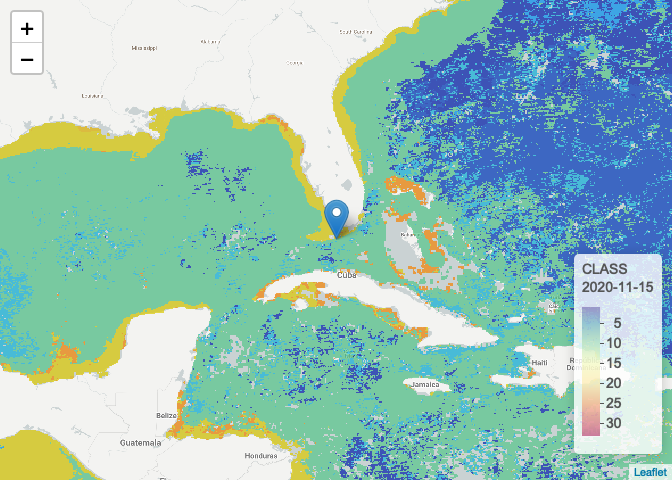
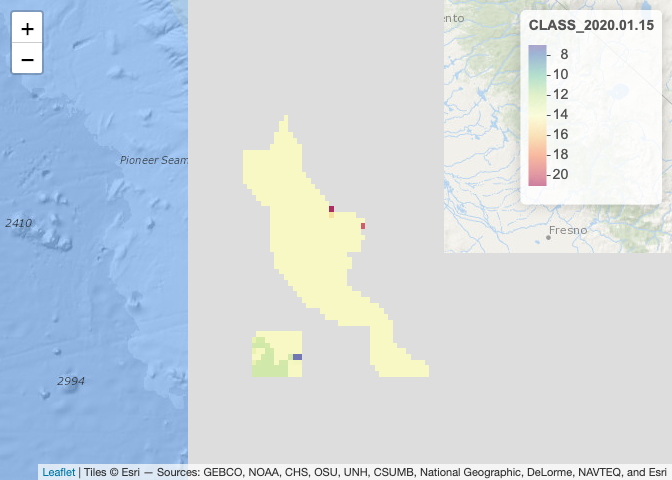
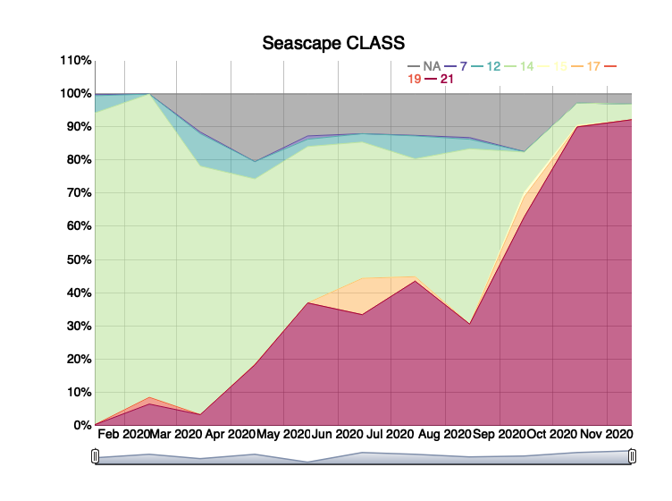

The seascapeR package provides functions for fetching, analyzing and visualizing Seascapes, a global and regional dynamic sea water classification product derived from satellite imagery by Maria Kavanaugh (OSU).
In particular, this package is meant to help nodes in the MarineBON.org network extract Seascape data, especially across NOAA Sanctuaries, for comparison with biological data from eDNA, sound, telemetry and other observational data to evaluate how dynamic water masses relate to ecosystem function.
Shiny app
Besides the documentation below and in Get Started, to see an example of how seascapeR functions get used to fetch data across sanctuaries, check out the get_data.R script. The gathered data from this script then feeds the Seascapes for Sanctuaries app built with Shiny. To see how the app generates maps and time series plots, see the app’s code at app.R. To see how the Seascape definitions with accompanying relative histograms are rendered in classes.html see the source Rmarkdown file classes.Rmd.
Seascapes for Sanctuaries Shiny app:

Seascape Classes described:

Install
remotes::install_github("marinebon/seascapeR")Use
Load the library and map Seascape classes using a web map server (wms) that loads image tiles (not data) interactively (zoom, pan) from R.
library(seascapeR)
#> Warning: replacing previous import 'dplyr::collapse' by 'glue::collapse' when
#> loading 'seascapeR'
#> Warning: replacing previous import 'dplyr::group_rows' by
#> 'kableExtra::group_rows' when loading 'seascapeR'
#> Registered S3 method overwritten by 'hoardr':
#> method from
#> print.cache_info httr
# variables
sanctuary = "mbnms" # or see: ?get_url_ply
ss_dataset = "global_monthly" # or "global_8day"
ss_var = "CLASS" # or "P"
date_beg = "2020-01-01"
date_end = "2021-01-01"
# paths
dir_data = here::here("data_ss")
dir_ply = glue::glue("{dir_data}/ply")
dir_grd = glue::glue(
"{dir_data}/{sanctuary}_{ss_dataset}")
ts_csv = glue::glue(
"{dir_data}/{sanctuary}_{ss_dataset}_{ss_var}.csv")
# get sanctuary polygon
ply <- get_url_ply(
sanctuary = sanctuary,
dir_ply = dir_ply)
ply
#> Geometry set for 1 feature
#> Geometry type: MULTIPOLYGON
#> Dimension: XY
#> Bounding box: xmin: -123.1401 ymin: 35.5 xmax: -121.1036 ymax: 37.88163
#> Geodetic CRS: WGS 84
#> MULTIPOLYGON (((-122.5 35.9, -123 35.9, -123 35...
# get SeaScape dataset information
ss_info <- get_ss_info(dataset = ss_dataset)
ss_info
#> <ERDDAP info> noaa_aoml_4729_9ee6_ab54
#> Base URL: https://cwcgom.aoml.noaa.gov/erddap/
#> Dataset Type: griddap
#> Dimensions (range):
#> time: (2003-01-15T12:00:00Z, 2021-04-15T12:00:00Z)
#> latitude: (-89.975, 89.975)
#> longitude: (-179.975, 179.975)
#> Variables:
#> CLASS:
#> Units: None
#> P:
#> Units: Punits
# map SeaScape using web map server (wms) image tiles
map_ss_wms(ss_info, ply, ss_var = ss_var)
# get SeaScape grids within polyon for date range
grds <- get_ss_grds(
ss_info, ply,
ss_var = ss_var,
date_beg = date_beg,
date_end = date_end,
dir_tif = dir_grd)
# get first grid, a raster layer in the raster stack grds
grd <- raster::raster(grds, 1)
# map SeaScape grid
map_ss_grd(grd)
# summarize SeaScape grids into a time series table
tbl <- sum_ss_grds_to_ts(grds, ts_csv = ts_csv)
tbl
#> Registered S3 method overwritten by 'cli':
#> method from
#> print.boxx spatstat.geom
#> # A tibble: 61 x 4
#> date cellvalue n_cells pct_cells
#> <date> <dbl> <dbl> <dbl>
#> 1 2020-01-15 7 2 0.00336
#> 2 2020-01-15 12 31 0.0520
#> 3 2020-01-15 14 558 0.936
#> 4 2020-01-15 21 2 0.00336
#> 5 2020-01-15 NA 3 0.00503
#> 6 2020-02-15 14 543 0.911
#> 7 2020-02-15 19 12 0.0201
#> 8 2020-02-15 21 39 0.0654
#> 9 2020-02-15 NA 2 0.00336
#> 10 2020-03-15 7 3 0.00503
#> # … with 51 more rows
# plot SeaScape time series
plot_ss_ts(tbl, show_legend = "always")
Interactivity
Note that when you run the code above in any of these R environments, you get an interactive visualization:
The interactive map allows you to zoom and pan. The time series has sliders to change the time window and hover over to get values.
For more on how to use the seascapeR functions and view these interactive visualizations, see the Getting Started article.
Data files
Data files were cached by setting path variables and feeding as arguments to functions in the following order:
-
get_url_ply(): Based ondir_ply, save *.zip, unzip and shapefile with file components *.shp, etc, readable by any GIS program. -
get_ss_grds(): Based ondir_grd, save grids (aka rasters) as GeoTIFs (*.tif) with filenames of form “grd_ ss_var _ date .tif”, readable by any GIS program. -
plot_ss_ts(): Based onts_csv, save the table as a comma-seperated value (*.csv) file, readable by any spreadsheet program.
fs::dir_tree(dir_data)
#> /Users/bbest/github/marinebon/seascapeR/data_ss
#> ├── mbnms_global_monthly
#> │ ├── grd_CLASS_2020.01.15.tif
#> │ ├── grd_CLASS_2020.02.15.tif
#> │ ├── grd_CLASS_2020.03.15.tif
#> │ ├── grd_CLASS_2020.04.15.tif
#> │ ├── grd_CLASS_2020.05.15.tif
#> │ ├── grd_CLASS_2020.06.15.tif
#> │ ├── grd_CLASS_2020.07.15.tif
#> │ ├── grd_CLASS_2020.08.15.tif
#> │ ├── grd_CLASS_2020.09.15.tif
#> │ ├── grd_CLASS_2020.10.15.tif
#> │ ├── grd_CLASS_2020.11.15.tif
#> │ ├── grd_CLASS_2020.12.15.tif
#> │ └── grd_CLASS_2021.01.15.tif
#> ├── mbnms_global_monthly_CLASS.csv
#> ├── mbnms_global_monthly_CLASS_attr.csv
#> └── ply
#> ├── mbnms_py2
#> │ ├── mbnms_py.dbf
#> │ ├── mbnms_py.html
#> │ ├── mbnms_py.kml
#> │ ├── mbnms_py.prj
#> │ ├── mbnms_py.sbn
#> │ ├── mbnms_py.sbx
#> │ ├── mbnms_py.shp
#> │ ├── mbnms_py.shp.htm
#> │ └── mbnms_py.shx
#> └── mbnms_py2.zipContribute
For more on how to contribute to seascapeR package development, see CONTRIBUTE.md.